Dynamic datasets tutorial
In the add-on tutorial, we looked at a single volumetric dataset. We also saw how to batch-process multiple mesh/3D image pairs. We now explain how to work with dynamic data. This tutorial focuses on the Blender user interface: for background, see the methods paper, and the python library tutorials (sidebar).
Often, a dataset is part of a larger collection - for example, frames of a movie or recordings different of different samples. How can we obtain a “consistent” cartographic projection across multiple datasets? We would like “the same” part of the surface to be mapped to the same cartographic location across frames or samples. This allows comparison and analysis across datasets, and avoids having to manually re-designing the UV map for each mesh in the collection.
There are two approaches to this problem:
- Define a UV map separately for each mesh in the collection, but using the same procedure/algorithm each time.
- Define a UV map for a single reference mesh, and then deform/warp the reference mesh to “fit” each mesh in the collection. The deformed mesh now fits the surface we want to extract from the 3D data but also has a UV map for cartographic projections. This also known as texture transfer or mesh to mesh mapping.
Getting a consistent UV map across multiple meshes is a complicated problem. Which approach you should use depends on your problem.
Representation of time-lapse data
We represent time-lapse datasets frame-by-frame: for each time point, you need to provide a volumetric .tif file and a surface mesh.
Option (1): Batch-computing UV maps
For surfaces with relatively simple geometries, approach 1 can work well. One very common example is a surface that can be defined by a height function over a 2D plane, without any “overhangs”. For example, let’s load the 3 meshes in the folder blender_addon_test_data/dynamic_datasets/planar_meshes (drag-and-drop them into Blender):
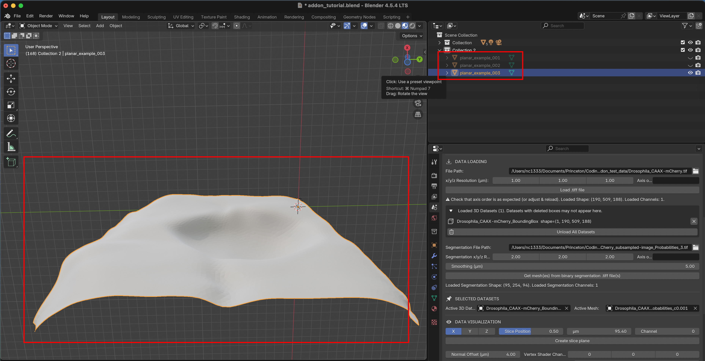
We can UV-project them using the “Project from view” option. Go to the UV editor, select all meshes to process and navigate to a view that looks straight down on the meshes (use X/Y/Z axes icon). Now click “UV->Project from view (bounds)” to get a projection:
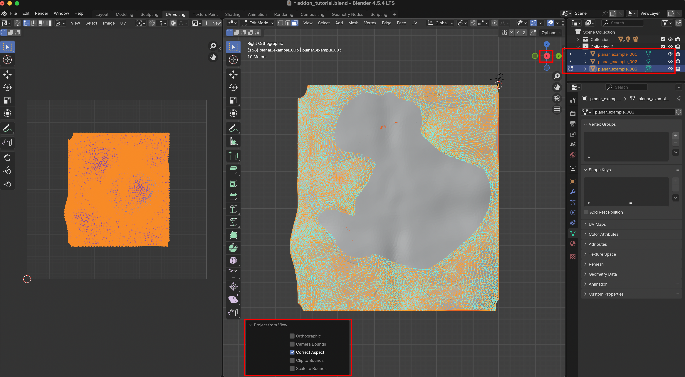
Now all three meshes (which could be time points from a movie) have a consistent UV map. This approach works great for mildly curved surfaces extracted from a confocal microscope \(z\)-stack.
You can also batch-process using Blender’s Cylindrical, Cube, or Spherical UV projection operators.
Spatial alignment
For this projection method to work, the different frames/samples need to be spatially aligned. For example, here is an example from the methods paper, where we use spherical projections of a movie of zebrafish development across multiple hours. By rotating and centering each time point, we can align the “equator” with the head-tail axis, and get a consistent projection. (C-C’) shows fluorescent intensities at two layers:
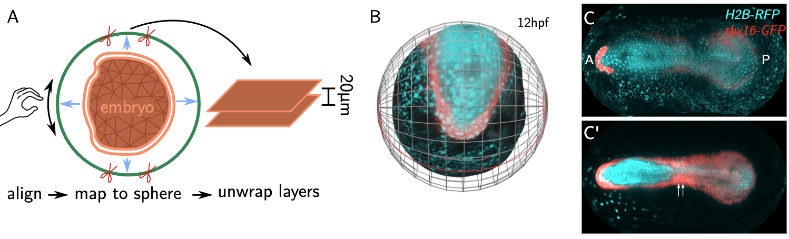
Option (2): Reference mesh
Method (2) uses mesh to mesh mapping. The idea is that we have a reference mesh - for example, from the first frame of a movie - on which a UV map is defined. If you have a consistently shaped samples - for example, > 500 in toto recordings of the early Drosophila embryo you can also make an “idealized” mesh with a nice UV map as a reference.
We then move and deform this mesh so that it fits our target mesh - which describes the surface we want to extract from the volumetric data, for example in subsequent frames - as well as possible. The deformed reference mesh now fits the volumetric data but still carries the UV map, and create a cartographic projection. The advantage of the reference mesh approach is that it allows you to use any custom UV map you want, potentially hand-crafted. Furthermore, the projection will always cover the same parts of the UV square. Here is a visualization, with the reference mesh in green, and the mesh extracted from the image data in orange:
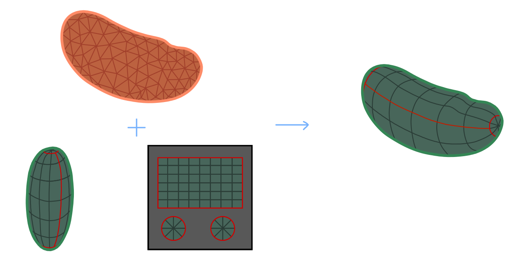
We proceed in two steps:
- Registration: Align reference mesh to target mesh using translations, rotations, and rescaling
- Shrink-wrapping: Move each point on the registered reference mesh to the closest point on the surface defined by the target mesh.
Here is an illustration - the green reference mesh is first registered to the orange target mesh:
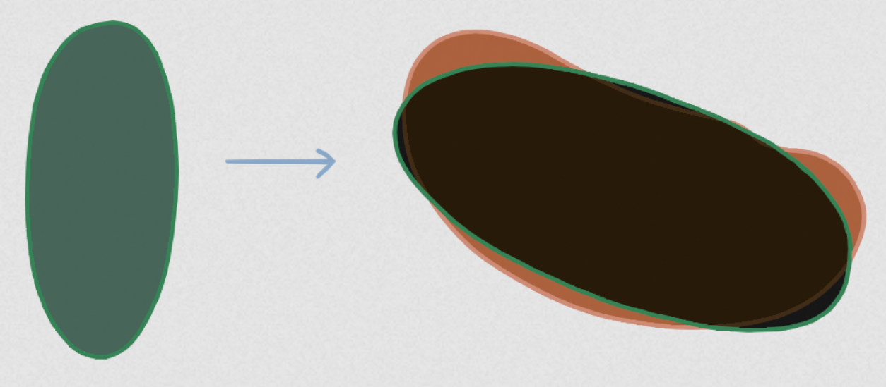
Next, the shrink-wrapping operation deforms the reference mesh to snugly fit the target mesh:
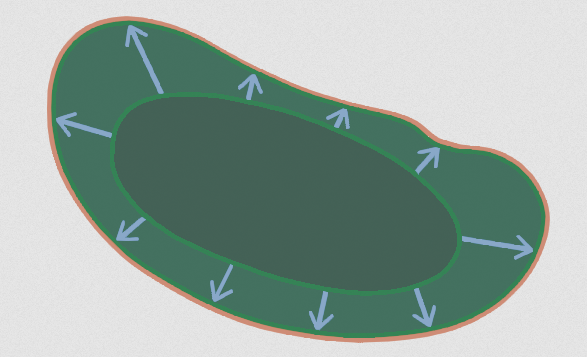
This approach works if the reference mesh and the target mesh are roughly of similar shape. If this is no longer the case - for example in a movie where the surface of interest undergoes drastic deformations - more sophisticated approaches are required (see this tutorial).
Add-on user interface: Mesh registration
Reference mesh for a single time point
The mesh blender_addon_test_data/Drosophila_reference.obj is an idealized (smoothed, symmetric) Drosophila embryo with a cylindrical cartographic projection. Let’s load it into Blender by drag-and-drop:
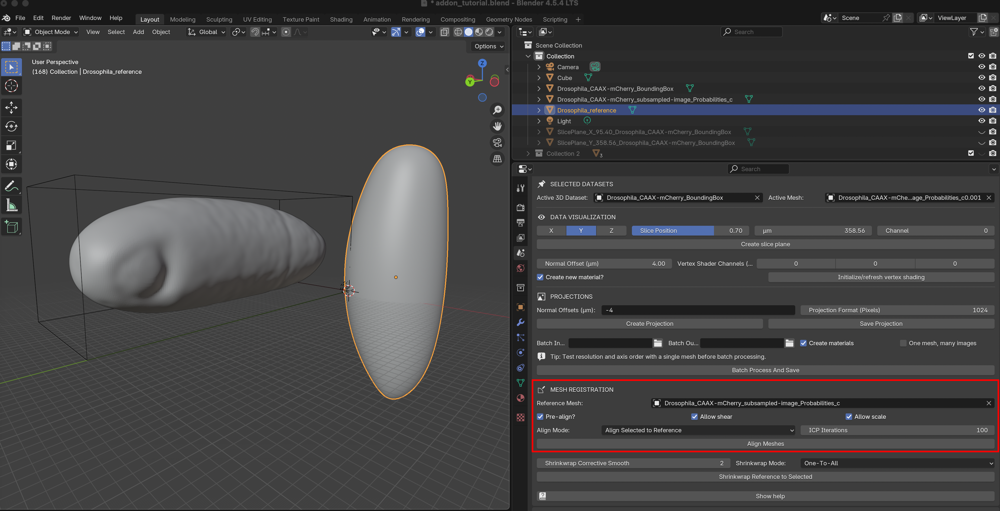
For the registration step, we can use the “Mesh registration” section of the add-on. Select Drosophila_reference as reference mesh. Blender-select the mesh extracted from the image data Drosophila_CAAX-mCherry_subsampled-image_Probabilities_c0 (should be highlighted in orange). There are two alignment modes:
Align Blender-selected meshes to reference mesh
Align reference mesh to Blender-selected meshes. This mode makes a copy of the reference mesh for each selected mesh.
The options allow you to fine-tune the alignment process.
Pre-align: leave checked unless the two meshes are already closely aligned
Allow shear / allow scale: scale and stretch the meshes during alignment. If unchecked, only rotations and translations are allowed.
ICP iterations: higher values may improve alignment but can take longer.
Let’s click the “Align Meshes” button - you should get a copy of the idealized reference mesh overlaid with the data mesh:
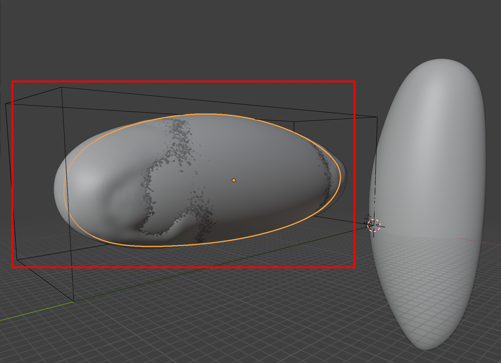
However, the fit between the reference mesh and the data mesh is not yet perfect. When generating a projection, this means that some parts of the surface are actually outside the embryo and appear black:
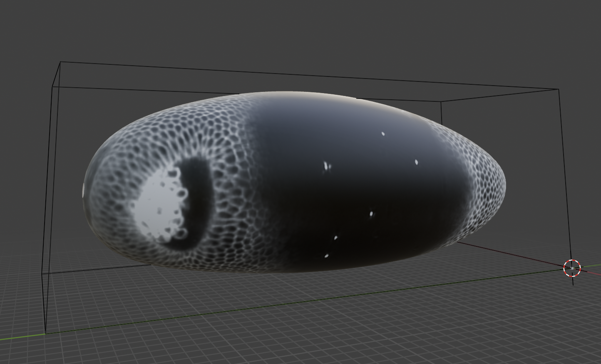
To fix this, proceed to the Shrink-wrapping step.
Blender-select the data mesh (in orange).
Select “Shrinkwrap Mode: One-To-All”. This makes a copy of the reference mesh for each Blender-selected mesh.
Set “Shrinkwrap Corrective Smooth”. This smoothing removes “creases” that can occur in shrink-wrapping.
You should see this result:
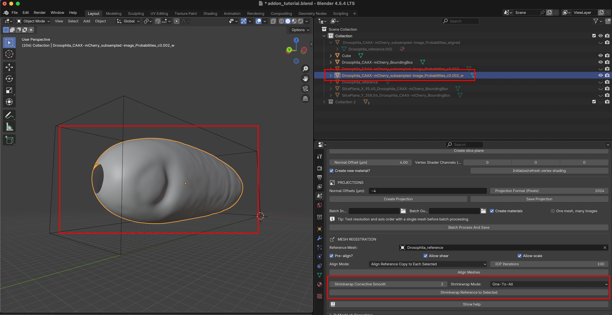
The add-on has created a copy of the reference mesh, shrink-wrapped to the data mesh. The wrapping operation also copies the UV map from the reference to the data mesh. We can now create a nice cartographic projection using either the wrapped or the data mesh (try it out).
Mesh registration for dynamic datasets
Next, let’s consider a movie with many frames (see also this tutorial). The simplest option is to use the same mesh for every time point. This works well if the surface is roughly static (but cells can be moving on the surface). Look at the batch-processing section of the add-on-tutorial.
If the surface deforms a lot, you need a different mesh for every frame. First, you will need to obtain these meshes (for example, you can batch-segment all frames of a movie, and convert all segmentations to meshes with the add-on). Then, you need to generate the UV map for all of these meshes. You can natch-compute the UV map, or shrink-wrap a reference mesh to all frame meshes (see above). The reference mesh is one of your frames (the keyframe) for which you have made a UV map. Shrinkwrapping works best when the reference and the target mesh are relatively similar.
For strongly deforming surfaces, we improve results with an iterative approach: first shrinkwrap the keyframe mesh to the mesh of the subsequent frame, then use that result and shrinkwrap it to the next-to-subsequent frame, etc. Use your most “complicated” shape as a keyframe. In developmental biology, this is often the last time point, and propagating it backward in time. As you iterative the shrink-wrapping, you may run into trouble if your keyframe becomes too deformed. You may therefore have to define multiple keyframes.
Let’s try this out with meshes of the surface of a strongly deforming organ the developing Drosophila midgut (courtesy of N. Mitchell, Mitchell et al 2022). The gut undergoes dramatic shape changes (constriction and coiling) as it develops. It is therefore a very challenging test case for a movie pipeline. The gut looks like this:
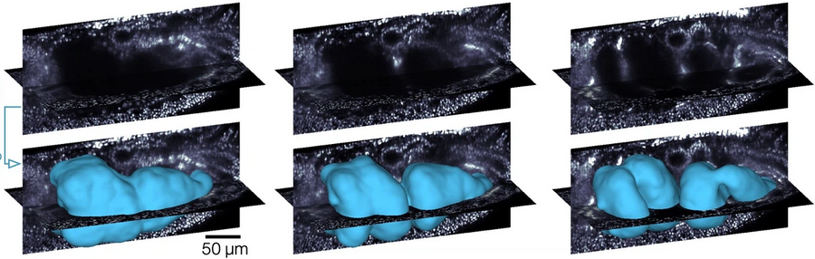
As shown in the methods paper, the idea is to make a UV map for the final time point, and “propagate” it to all other timepoints:
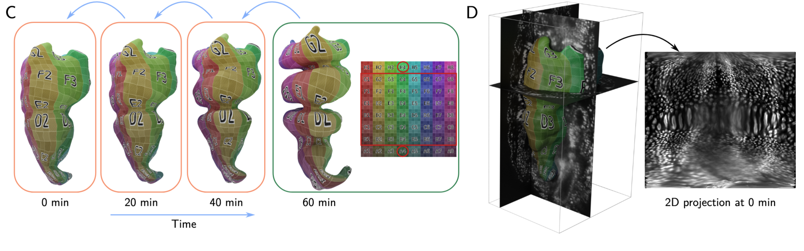
We will use meshes of the gut surface already computed by Mitchell et al. (see this tutorial). Load them into Blender from the blender_addon_test_data/dynamic_datasets/shrinkwrap_meshes tutorial. In the UV editor, you can see that only the reference mesh (time point 10) has a UV map:
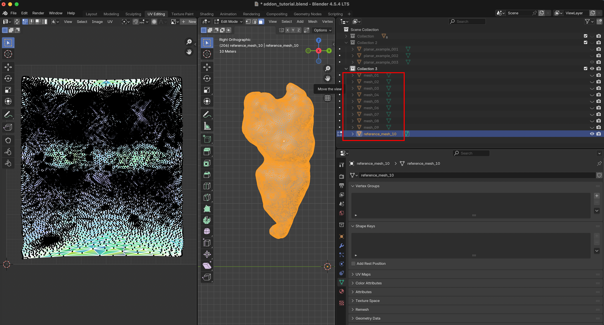
Let’s switch back to the Layout workspace, and use the add-on to shrink-wrap mesh 10 iteratively onto all other time points. Select mesh 10 as reference, and Blender-select all other meshes. As shrinkwrap mode, choose “Iterative Backward”. Shrink-wrapping happens in alphabetical order (so from reference_mesh_10 to mesh_09, then from mesh_09 to mesh_08, etc).
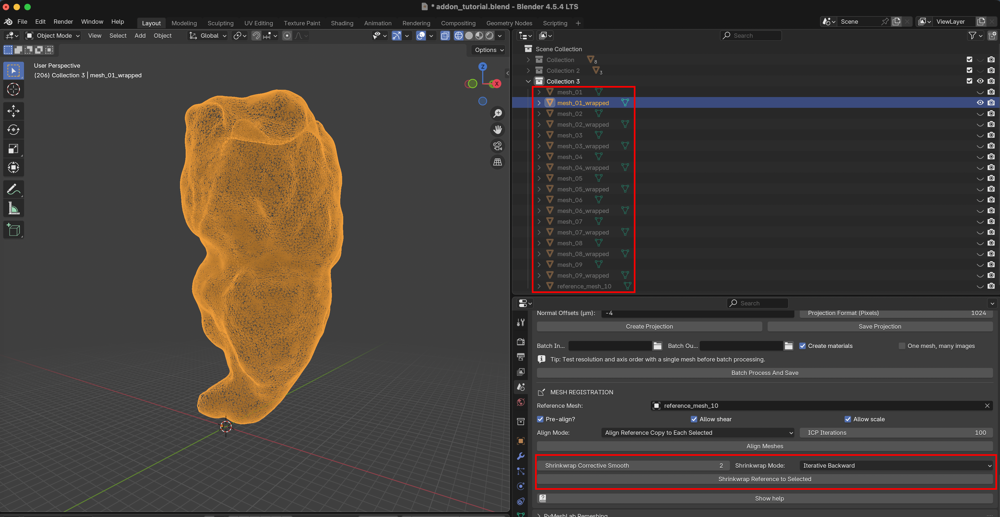
After clicking “Shrinkwrap Reference to Selected”, you should see a “wrapped” mesh for every time point, equipped with a UV map. You can also see that parts of the mesh get distorted during the wrapping process.